![]()
peso LongEstandar LongHorquilla LongTotal
peso 1.0000000 0.9863101 0.9875609 0.9837253
LongEstandar 0.9863101 1.0000000 0.9939913 0.9943670
LongHorquilla 0.9875609 0.9939913 1.0000000 0.9923944
LongTotal 0.9837253 0.9943670 0.9923944 1.0000000Datos biométricos de Cachama blanca
Análisis de regresión lineal
Objetivo general
Objetivo
Analizar si hay diferencias significativas en las longitudes y los pesos de las cachamas, dependiendo del estanque de cultivo.
Llevar a cabo ajuste de modelos de regresión múltiple, buscando estimar el peso de las cachamas en función de las longitudes
Lectura de los datos.
Directorio de trababjo
- Verificamos cuál es el directorio actual.
[1] "/Users/unicordoba/Documents/Cursos/Laboratorio"- Fijamos el directorio de trabajo.
Cargamos tidyverse
Lectura de los datos
# A tibble: 6 × 5
estanque peso LongEstandar LongHorquilla LongTotal
<chr> <dbl> <dbl> <dbl> <dbl>
1 R02 692 27 31 34
2 R02 154 16 18 21
3 R02 314 18.5 21 25
4 R02 290 19 21.5 24
5 R02 218 17 19.5 23
6 R02 416 22.5 25.5 29.4Verificación de lectura.
summary
estanque peso LongEstandar LongHorquilla
Length:55 Min. :122 Min. : 14.50 Min. :16.00
Class :character 1st Qu.:164 1st Qu.: 16.00 1st Qu.:18.00
Mode :character Median :186 Median : 16.50 Median :18.50
Mean :260 Mean : 20.61 Mean :20.38
3rd Qu.:269 3rd Qu.: 18.75 3rd Qu.:20.75
Max. :738 Max. :165.00 Max. :31.80
LongTotal
Min. :18.50
1st Qu.:20.60
Median :21.50
Mean :23.24
3rd Qu.:24.00
Max. :35.50 Verificación de lectura.
glimpse
Rows: 55
Columns: 5
$ estanque <chr> "R02", "R02", "R02", "R02", "R02", "R02", "R02", "R02", …
$ peso <dbl> 692, 154, 314, 290, 218, 416, 270, 214, 222, 206, 204, 1…
$ LongEstandar <dbl> 27.0, 16.0, 18.5, 19.0, 17.0, 22.5, 18.0, 17.0, 17.4, 17…
$ LongHorquilla <dbl> 31.0, 18.0, 21.0, 21.5, 19.5, 25.5, 20.5, 19.0, 20.0, 19…
$ LongTotal <dbl> 34.0, 21.0, 25.0, 24.0, 23.0, 29.4, 24.0, 22.5, 23.4, 22…Análisis exploratorio de los datos.
Objetivo
Importante
Observar la relación entre las longitudes y el peso, diferenciados por estanque.
Calcular estadísticas descriptivas de peso y longitudes desagregadas por estanque.
Gráfico de peso vs LongEstandar
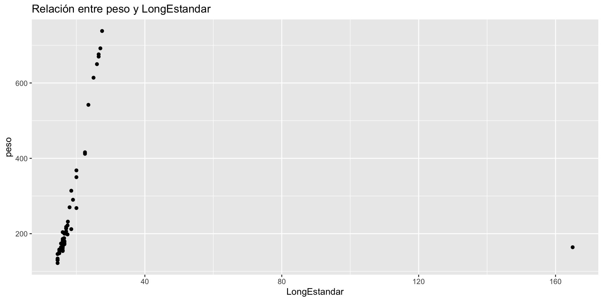
Quitamos el dato extremo
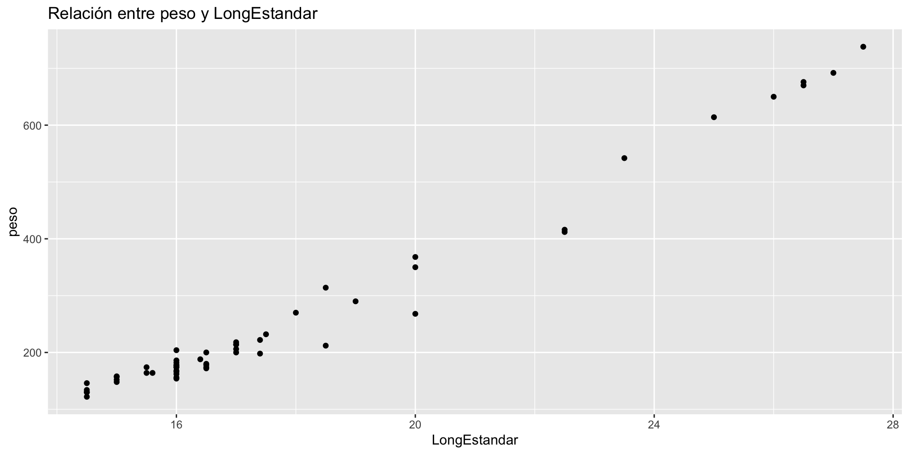
Corregir el dato extremo
Gráfico de peso vs LongHorquilla
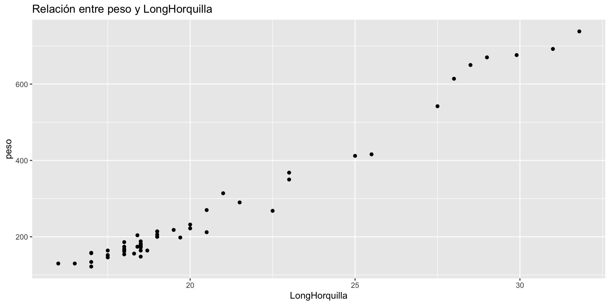
Gráfico de peso vs LongTotal
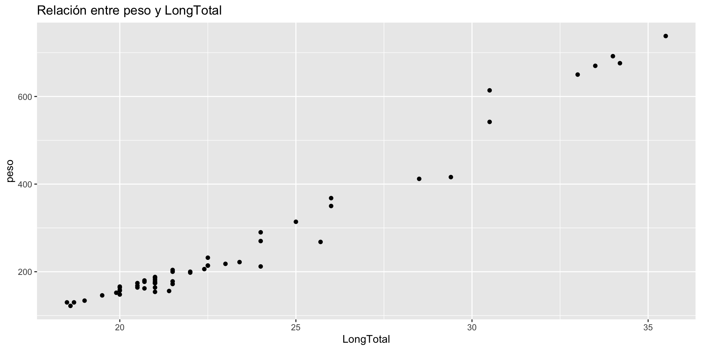
peso vs LongTotal con línea suavizada
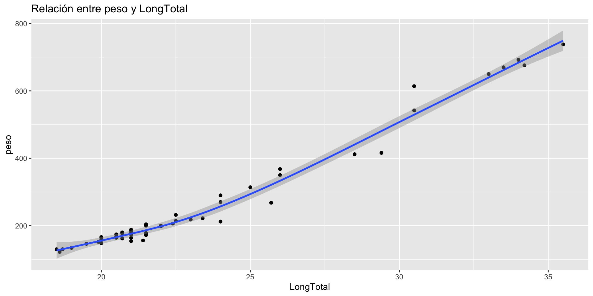
peso vs LongTotal con línea de regresion
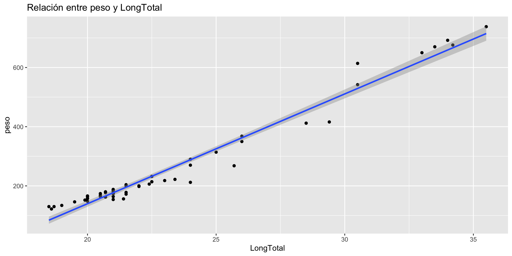
peso vs LongTotal con línea de regresion sin banda
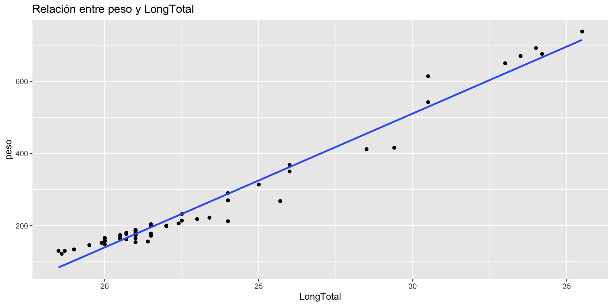
peso vs LongTotal diferenciado por estanque
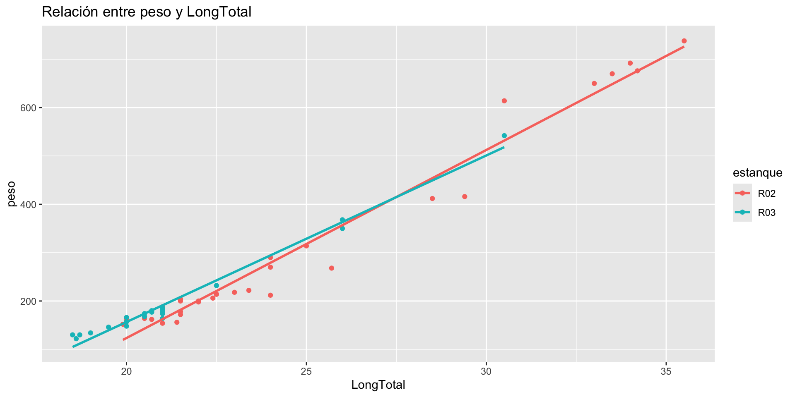
peso vs LongTotal diferenciado por estanque
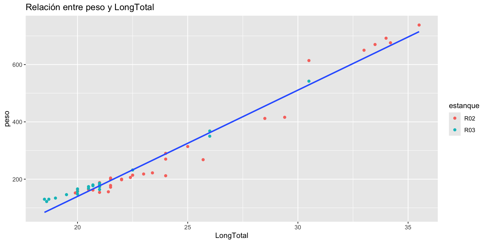
Ejercicios
Probar la hipótesis: la media del
pesodel estanqueR2es igual a la media del peso del estanqueR3contra la alternativa que son distintas.Probar la hipótesis: la media de la
LongEstandardel estanqueR2es igual a la media deLongEstandardel estanqueR3contra la alternativa que son distintas.Probar la hipótesis: la media de la
LongHorquilladel estanqueR2es igual a la media deLongHorquilladel estanqueR3contra la alternativa que son distintas.
Ejercicios
Probar la hipótesis: la media de la
LongTotaldel estanqueR2es igual a la media deLongTotaldel estanqueR3contra la alternativa que son distintas.Antes de llevar a cabo las pruebas de medias se debe probar la hipótesis de igualdad de varianzas y proceder con las medias de acuerdo al resultado de la preubas sobre varianzas.
Las tres longitudes diferenciadas por tipo
Organización de los datos
# A tibble: 6 × 4
estanque peso Tipo Longitud
<chr> <dbl> <chr> <dbl>
1 R02 692 LongEstandar 27
2 R02 692 LongHorquilla 31
3 R02 692 LongTotal 34
4 R02 154 LongEstandar 16
5 R02 154 LongHorquilla 18
6 R02 154 LongTotal 21Las tres longitudes diferenciadas por tipo
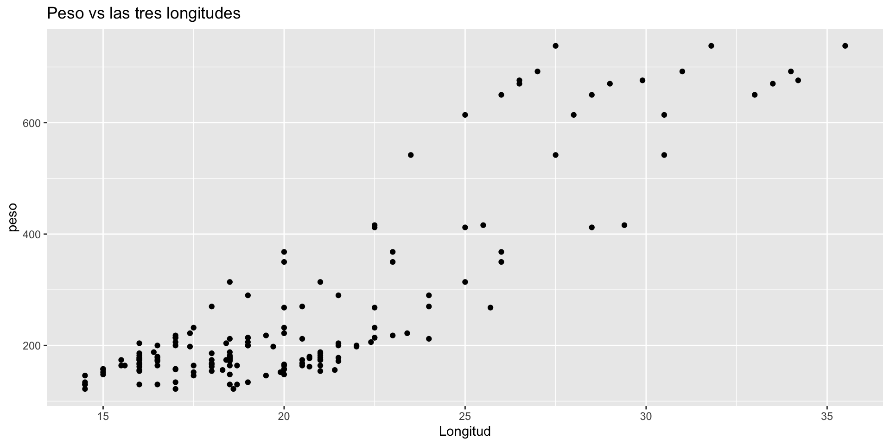
Las tres longitudes diferenciadas por tipo
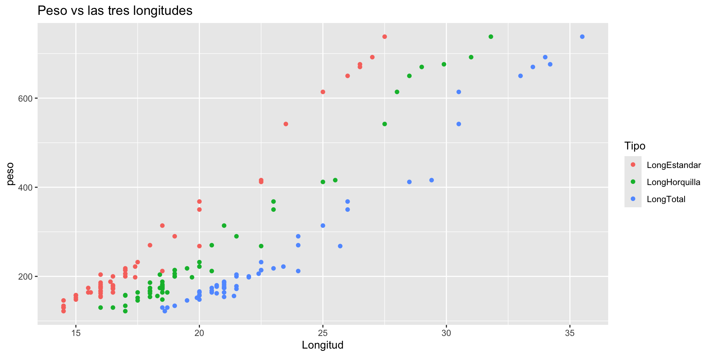
Las tres longitudes diferenciadas por tipo
- Con línea suavizada
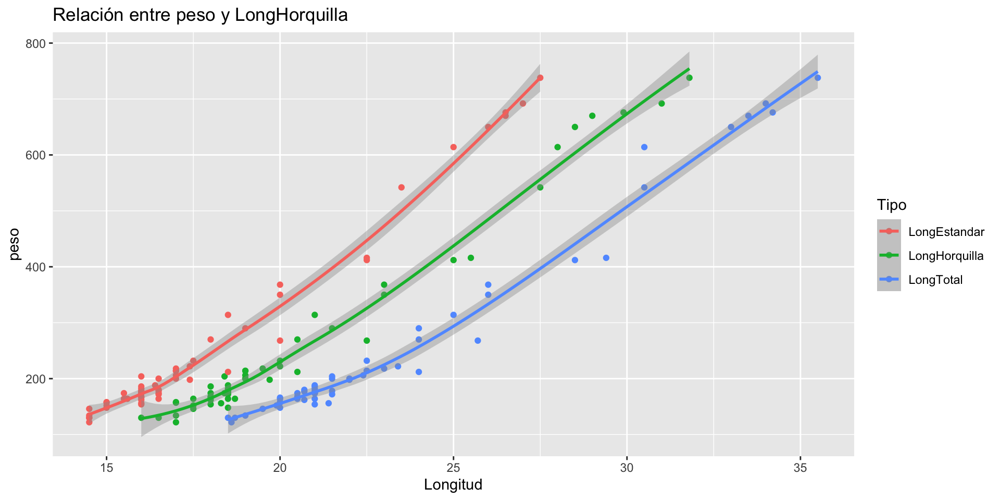
Las tres longitudes diferenciadas por tipo
- Con línea de regresión
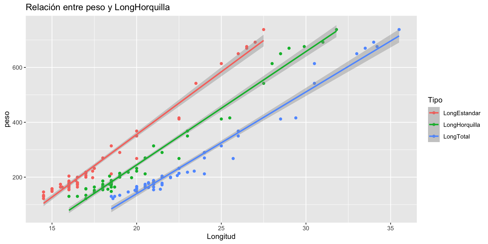
Matriz de correlaciones
Matriz de correlaciones (otra forma)
# A tibble: 4 × 5
term peso LongEstandar LongHorquilla LongTotal
<chr> <dbl> <dbl> <dbl> <dbl>
1 peso NA 0.98631 0.98756 0.98373
2 LongEstandar 0.98631 NA 0.99399 0.99437
3 LongHorquilla 0.98756 0.99399 NA 0.99239
4 LongTotal 0.98373 0.99437 0.99239 NA Matriz de Dispersión
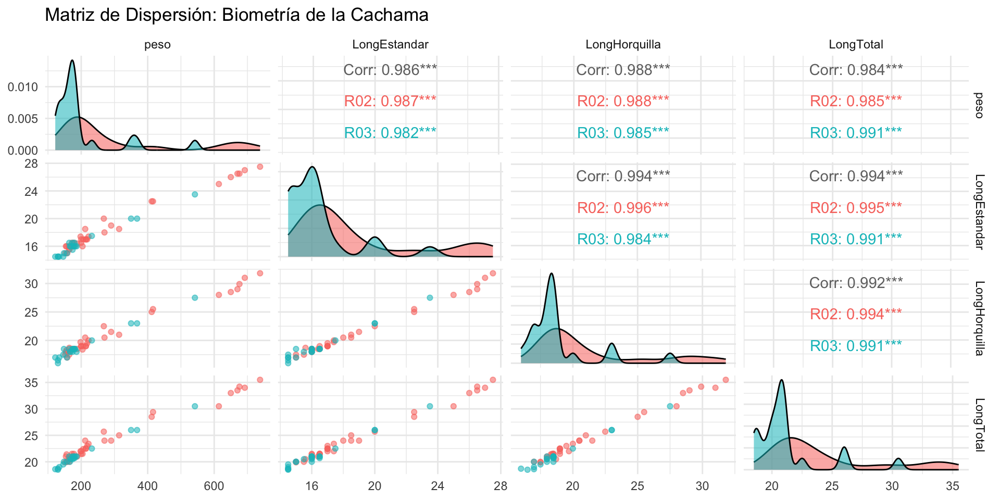
Ajuste de modelo de regresión
Modelo con todas las variables
Nota
Ajustaremos el modelo de regresión lineal múltiple \[ E(P_i)=\beta_0 + \beta_1L_e + \beta_2L_h+\beta_3L_t \]
Modelo con todas las variables
Call:
lm(formula = peso ~ LongEstandar + LongHorquilla + LongTotal,
data = dfn)
Residuals:
Min 1Q Median 3Q Max
-83.121 -11.873 1.808 18.455 41.659
Coefficients:
Estimate Std. Error t value Pr(>|t|)
(Intercept) -577.405 20.816 -27.738 < 2e-16 ***
LongEstandar 16.320 11.081 1.473 0.14695
LongHorquilla 24.265 8.626 2.813 0.00695 **
LongTotal 2.186 8.026 0.272 0.78646
---
Signif. codes: 0 '***' 0.001 '**' 0.01 '*' 0.05 '.' 0.1 ' ' 1
Residual standard error: 25.9 on 51 degrees of freedom
Multiple R-squared: 0.9771, Adjusted R-squared: 0.9758
F-statistic: 726.7 on 3 and 51 DF, p-value: < 2.2e-16¿Qué hipótesis se prueba?
Tip
En la salida anterior el t value prueba la hipótesis
\[ H_0: \beta_i = 0 \hbox{ contra } H_1: \beta_i\neq 0 \]
Comparación del ajuste de modelos
Modelos con dos variables
Nota
Ahora ajustaremos modelos con solo dos variables y compararemos el ajuste con el modelo que tiene todas las variables, por ejemplo, ajustaremos
\[
E(P_i)=\beta_0 + \beta_1L_e + \beta_2L_t
\]
Modelo con Estandar + Total
Call:
lm(formula = peso ~ LongEstandar + LongTotal, data = dfn)
Residuals:
Min 1Q Median 3Q Max
-86.70 -14.79 2.11 20.82 43.98
Coefficients:
Estimate Std. Error t value Pr(>|t|)
(Intercept) -571.421 22.041 -25.926 < 2e-16 ***
LongEstandar 33.490 9.844 3.402 0.00129 **
LongTotal 9.974 8.018 1.244 0.21911
---
Signif. codes: 0 '***' 0.001 '**' 0.01 '*' 0.05 '.' 0.1 ' ' 1
Residual standard error: 27.57 on 52 degrees of freedom
Multiple R-squared: 0.9736, Adjusted R-squared: 0.9726
F-statistic: 958.6 on 2 and 52 DF, p-value: < 2.2e-16Enmascaraniento
Importante
Note que en el modelo con tres variables, el parámetro \(\beta\) asociado a la longitud estándar no es significativo, sin embargo, al quitar la longitud de horquilla, este resulta ser significativamente distinto de cero. Este fenómeno se conoce como enmascaramiento
Modelo con Estandar + Horquilla
Call:
lm(formula = peso ~ LongEstandar + LongHorquilla, data = dfn)
Residuals:
Min 1Q Median 3Q Max
-83.192 -12.122 0.035 18.751 41.331
Coefficients:
Estimate Std. Error t value Pr(>|t|)
(Intercept) -574.942 18.581 -30.943 < 2e-16 ***
LongEstandar 18.097 8.875 2.039 0.04654 *
LongHorquilla 25.075 8.024 3.125 0.00291 **
---
Signif. codes: 0 '***' 0.001 '**' 0.01 '*' 0.05 '.' 0.1 ' ' 1
Residual standard error: 25.67 on 52 degrees of freedom
Multiple R-squared: 0.9771, Adjusted R-squared: 0.9762
F-statistic: 1110 on 2 and 52 DF, p-value: < 2.2e-16Observe el enmascaramiento
Importante
Al quitar la longitud total, los betas de las otras dos resultan significativos. En el modelo con las tres longitudes, solo la longitud de horquilla era significativa.
Modelo con Horquilla + Total
Call:
lm(formula = peso ~ LongHorquilla + LongTotal, data = dfn)
Residuals:
Min 1Q Median 3Q Max
-80.912 -11.669 -0.495 12.895 49.237
Coefficients:
Estimate Std. Error t value Pr(>|t|)
(Intercept) -589.579 19.319 -30.519 < 2e-16 ***
LongHorquilla 31.263 7.280 4.295 7.67e-05 ***
LongTotal 9.147 6.559 1.395 0.169
---
Signif. codes: 0 '***' 0.001 '**' 0.01 '*' 0.05 '.' 0.1 ' ' 1
Residual standard error: 26.19 on 52 degrees of freedom
Multiple R-squared: 0.9762, Adjusted R-squared: 0.9753
F-statistic: 1065 on 2 and 52 DF, p-value: < 2.2e-16Cuál ajusta mejor
Importante
Llevaremos a cabo una prueba de hipótesis. La hipótesis nula es que el modelo de más variables ajusta significativamente mejor, contra la alternativa que la diferencia de ajuste no es significativa y que por tanto debemos elegir el modelo con menos variables.
función anova
Analysis of Variance Table
Model 1: peso ~ LongEstandar + LongTotal
Model 2: peso ~ LongEstandar + LongHorquilla + LongTotal
Res.Df RSS Df Sum of Sq F Pr(>F)
1 52 39514
2 51 34206 1 5307.4 7.9131 0.006952 **
---
Signif. codes: 0 '***' 0.001 '**' 0.01 '*' 0.05 '.' 0.1 ' ' 1función anova
Analysis of Variance Table
Model 1: peso ~ LongEstandar + LongHorquilla
Model 2: peso ~ LongEstandar + LongHorquilla + LongTotal
Res.Df RSS Df Sum of Sq F Pr(>F)
1 52 34256
2 51 34206 1 49.746 0.0742 0.7865Selección automática mediante Stepwise (Basado en AIC)
Start: AIC=361.81
peso ~ LongEstandar + LongHorquilla + LongTotal
Df Sum of Sq RSS AIC
- LongTotal 1 49.7 34256 359.89
<none> 34206 361.81
- LongEstandar 1 1454.9 35661 362.10
- LongHorquilla 1 5307.4 39514 367.74
Step: AIC=359.89
peso ~ LongEstandar + LongHorquilla
Df Sum of Sq RSS AIC
<none> 34256 359.89
+ LongTotal 1 49.7 34206 361.81
- LongEstandar 1 2739.1 36995 362.12
- LongHorquilla 1 6433.5 40690 367.35El modelo seleccionado
Call:
lm(formula = peso ~ LongEstandar + LongHorquilla, data = dfn)
Residuals:
Min 1Q Median 3Q Max
-83.192 -12.122 0.035 18.751 41.331
Coefficients:
Estimate Std. Error t value Pr(>|t|)
(Intercept) -574.942 18.581 -30.943 < 2e-16 ***
LongEstandar 18.097 8.875 2.039 0.04654 *
LongHorquilla 25.075 8.024 3.125 0.00291 **
---
Signif. codes: 0 '***' 0.001 '**' 0.01 '*' 0.05 '.' 0.1 ' ' 1
Residual standard error: 25.67 on 52 degrees of freedom
Multiple R-squared: 0.9771, Adjusted R-squared: 0.9762
F-statistic: 1110 on 2 and 52 DF, p-value: < 2.2e-16El mejor conjunto de predictores
Subset selection object
Call: regsubsets.formula(peso ~ LongEstandar + LongHorquilla + LongTotal,
data = dfn)
3 Variables (and intercept)
Forced in Forced out
LongEstandar FALSE FALSE
LongHorquilla FALSE FALSE
LongTotal FALSE FALSE
1 subsets of each size up to 3
Selection Algorithm: exhaustive
LongEstandar LongHorquilla LongTotal
1 ( 1 ) " " "*" " "
2 ( 1 ) "*" "*" " "
3 ( 1 ) "*" "*" "*" El mejor modelo con una variable
Call:
lm(formula = peso ~ LongHorquilla, data = dfn)
Residuals:
Min 1Q Median 3Q Max
-79.824 -11.474 -0.493 11.533 54.146
Coefficients:
Estimate Std. Error t value Pr(>|t|)
(Intercept) -582.2895 18.7631 -31.03 <2e-16 ***
LongHorquilla 41.3384 0.9041 45.72 <2e-16 ***
---
Signif. codes: 0 '***' 0.001 '**' 0.01 '*' 0.05 '.' 0.1 ' ' 1
Residual standard error: 26.42 on 53 degrees of freedom
Multiple R-squared: 0.9753, Adjusted R-squared: 0.9748
F-statistic: 2091 on 1 and 53 DF, p-value: < 2.2e-16Decidir entre usar una o dos variables
Analysis of Variance Table
Model 1: peso ~ LongHorquilla
Model 2: peso ~ LongEstandar + LongHorquilla
Res.Df RSS Df Sum of Sq F Pr(>F)
1 53 36995
2 52 34256 1 2739.1 4.1579 0.04654 *
---
Signif. codes: 0 '***' 0.001 '**' 0.01 '*' 0.05 '.' 0.1 ' ' 1Predicciones
Uso del modelo ajustado
Importante
Una vez se ha elegido el modelo, lo que sigue es usarlo para hacer predicciones, es decir, dadas las longitudes estándar y de horquilla, podemos estimar el peso. Hay dos tipos de predicciones:
Podemos estimar el peso promedio de la población de todos los animales que tengan los valores dados de las longitudes estándar y de horquilla.
Dadas las longitudes estándar y de horquilla de un animal en particular, podemos estimar su peso.
Ejemplo usando el modelo de dos variables
Estimar el peso promedio de la población de cachamas blancas que tengan LongEstandar= 16.5 y LongHorquilla= 18.5
LongEstandar LongHorquilla
1 16.5 18.5Estimación de la media
fit lwr upr
1 187.5515 178.3773 196.7258Predicción
fit lwr upr
1 187.5515 135.2371 239.866Estimar más de un peso
Estimar el peso promedio de la población de cachamas blancas que tengan LongEstandar= 14.5, 16, 16.5, 18.5 y 27.5 y LongHorquilla= 16, 18, 18.5 , 20.75 y 31.8 , obtener intervalos de confianza al 99%
LongEstandar LongHorquilla
1 14.5 16.00
2 16.0 18.00
3 16.5 18.50
4 18.5 20.75
5 27.5 31.80Estimación de la media
fit lwr upr
1 88.66938 70.01776 107.3210
2 165.96540 153.85836 178.0724
3 187.55155 175.32740 199.7757
4 280.16494 269.02477 291.3051
5 720.11968 687.57514 752.6642Predicción
fit lwr upr
1 88.66938 17.55437 159.7844
2 165.96540 96.28009 235.6507
3 187.55155 117.84580 257.2573
4 280.16494 210.64109 349.6888
5 720.11968 644.16832 796.0710Usando el universo tidyverse
Estimación de la media
# A tibble: 5 × 5
LongEstandar LongHorquilla .fitted .lower .upper
<dbl> <dbl> <dbl> <dbl> <dbl>
1 14.5 16 88.669 74.671 102.67
2 16 18 165.97 156.88 175.05
3 16.5 18.5 187.55 178.38 196.73
4 18.5 20.75 280.16 271.80 288.53
5 27.5 31.8 720.12 695.69 744.54Predicción
# A tibble: 5 × 5
LongEstandar LongHorquilla .fitted .lower .upper
<dbl> <dbl> <dbl> <dbl> <dbl>
1 14.5 16 88.669 35.297 142.04
2 16 18 165.97 113.67 218.26
3 16.5 18.5 187.55 135.24 239.87
4 18.5 20.75 280.16 227.99 332.34
5 27.5 31.8 720.12 663.12 777.12Gráfico: bandas de confianza (modelo de una variable)
Paso 1: Preparar los datos de predicción
Primero, creamos un vector con una secuencia ordenada de valores para la longitud de horquilla (cubriendo el rango de sus datos) para que las bandas del gráfico queden curvas y suaves.
LongHorquilla
1 16.00000
2 16.15960
3 16.31919
4 16.47879
5 16.63838
6 16.79798
7 16.95758
8 17.11717
9 17.27677
10 17.43636
11 17.59596
12 17.75556
13 17.91515
14 18.07475
15 18.23434
16 18.39394
17 18.55354
18 18.71313
19 18.87273
20 19.03232
21 19.19192
22 19.35152
23 19.51111
24 19.67071
25 19.83030
26 19.98990
27 20.14949
28 20.30909
29 20.46869
30 20.62828
31 20.78788
32 20.94747
33 21.10707
34 21.26667
35 21.42626
36 21.58586
37 21.74545
38 21.90505
39 22.06465
40 22.22424
41 22.38384
42 22.54343
43 22.70303
44 22.86263
45 23.02222
46 23.18182
47 23.34141
48 23.50101
49 23.66061
50 23.82020
51 23.97980
52 24.13939
53 24.29899
54 24.45859
55 24.61818
56 24.77778
57 24.93737
58 25.09697
59 25.25657
60 25.41616
61 25.57576
62 25.73535
63 25.89495
64 26.05455
65 26.21414
66 26.37374
67 26.53333
68 26.69293
69 26.85253
70 27.01212
71 27.17172
72 27.33131
73 27.49091
74 27.65051
75 27.81010
76 27.96970
77 28.12929
78 28.28889
79 28.44848
80 28.60808
81 28.76768
82 28.92727
83 29.08687
84 29.24646
85 29.40606
86 29.56566
87 29.72525
88 29.88485
89 30.04444
90 30.20404
91 30.36364
92 30.52323
93 30.68283
94 30.84242
95 31.00202
96 31.16162
97 31.32121
98 31.48081
99 31.64040
100 31.80000Gráfico: bandas de confianza
Paso 2: Extraer los intervalos usando broom::augment()
Para la media
Código
banda_confianza <- augment(modelo_1a, newdata = paso_ajuste,
interval = "confidence", conf.level = 0.95) %>%
select(LongHorquilla, .fitted, .lower_conf = .lower, .upper_conf = .upper)
# 3. Extraer intervalo de PREDICCIÓN para un individuo
banda_prediccion <- augment(modelo_1a, newdata = paso_ajuste,
interval = "prediction", conf.level = 0.95) %>%
select(LongHorquilla, .lower_pred = .lower, .upper_pred = .upper)
# 4. Unir ambas especificaciones en un solo dataframe listo para ggplot
df_grafico <- left_join(banda_confianza, banda_prediccion, by = "LongHorquilla")Gráfico: bandas de confianza
Paso 2: Extraer los intervalos usando broom::augment()
Para la predicción
Gráfico: bandas de confianza
Paso 2: Extraer los intervalos usando broom::augment()
Unir en un solo data
El gráfico
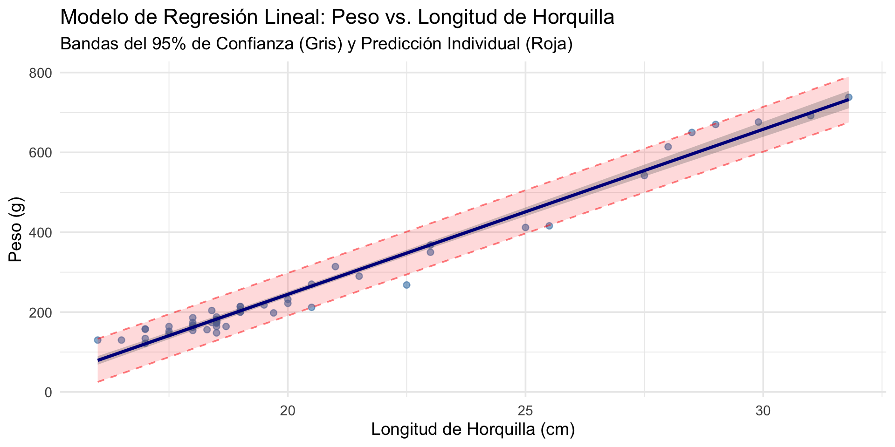
El gráfico
Puntos observados reales (datos originales)
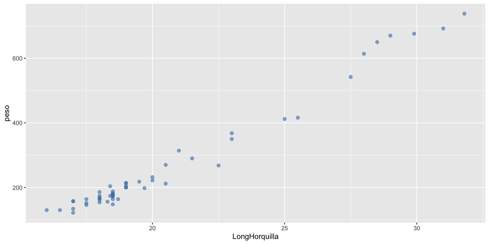
El gráfico
Banda de PREDICCIÓN INDIVIDUAL
Código
fig=fig +
geom_ribbon(data = df_grafico, aes(x = LongHorquilla,
ymin = .lower_pred, ymax = .upper_pred),
fill = "red", alpha = 0.15) +
geom_line(data = df_grafico,
aes(x = LongHorquilla,
y = .lower_pred),
color = "red",
linetype = "dashed",
alpha = 0.5) +
geom_line(data = df_grafico,
aes(x = LongHorquilla,
y = .upper_pred),
color = "red",
linetype = "dashed",
alpha = 0.5)
fig 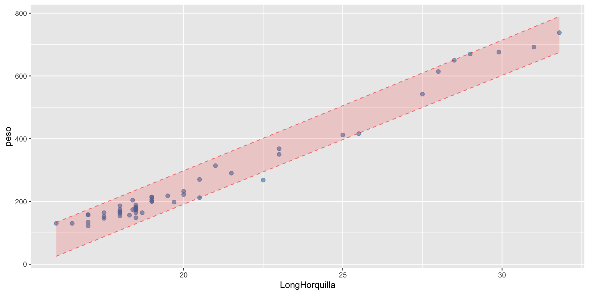
El gráfico
Banda de la media
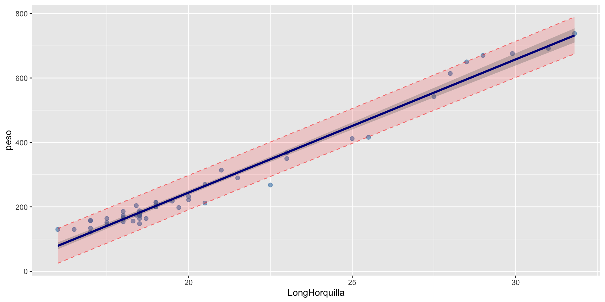
El gráfico
Etiquetas y tema

El gráfico
Banda de PREDICCIÓN INDIVIDUAL
Código
fig=fig+ geom_ribbon(data = df_grafico, aes(x = LongHorquilla, ymin = .lower_conf, ymax = .upper_conf),
fill = "gray40", alpha = 0.3) +
# 4. Línea de Regresión Estimada
geom_line(data = df_grafico, aes(x = LongHorquilla, y = .fitted),
color = "darkblue", size = 1.2) +
# Etiquetas y diseño estético profesional
labs(
title = "Modelo de Regresión Lineal: Peso vs. Longitud de Horquilla",
subtitle = "Bandas del 95% de Confianza (Gris) y Predicción Individual (Roja)",
x = "Longitud de Horquilla (cm)",
y = "Peso (g)"
) +
theme_minimal(base_size = 14)